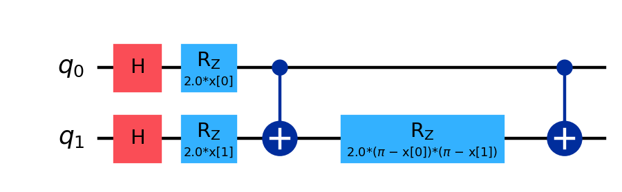
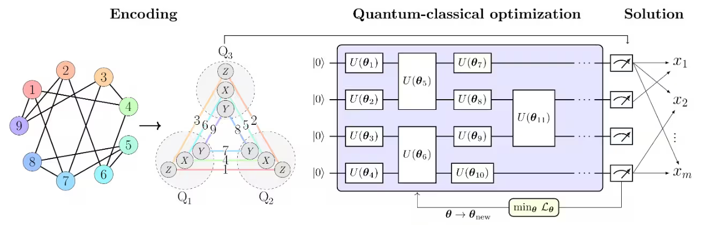

The Recap
This page collects everything that this repo has taught so far. Each section answers one question that you ask when you use a quantum computer. Each section has cards, one for each technique. The tag on a card names the project that used the technique.
The big picture
Every project here follows the same five steps. Each box is one section of this page. Click a box to go to that section.
The basics you need for everything else
Every later section uses these three ideas.
Shots and expectation values
everywhereA shot is one run of the circuit, followed by one measurement. Each qubit gives 0 or 1. An expectation value is the average over many shots.
Example: one qubit
In 1,000 shots, the qubit reads 0 in 900 shots and 1 in 100 shots. A reading of 0 counts as +1, and a reading of 1 counts as −1:
Example: two qubits
For two qubits, each shot gives the product (Z₁ reading) × (Z₂ reading). The product is +1 when the qubits agree and −1 when they disagree. In 1,000 shots, the readings are 00 in 450 shots, 11 in 350 shots, 01 in 120 shots and 10 in 80 shots.
The general rule
⟨Z⟩ goes from +1 (the qubit always reads 0) to −1 (the qubit always reads 1). Qiskit has two tools for this:
- The Sampler returns counts of bitstrings.
- The Estimator returns expectation values.
Measuring X and Y
VQE · PCEThe chip can measure only Z. To measure X or Y, rotate the qubit first, then measure Z.
Example: ⟨X⟩ of the state |+⟩
- Start with |+⟩. This state has ⟨X⟩ = 1.
- Apply Ry(−π/2). This rotation changes |+⟩ to |0⟩.
- Measure Z. Every shot reads 0, so the result is +1.
So the Z measurement after the rotation gives ⟨X⟩ = 1.
The general rule
to measure Y: Rx(π/2), then measure Z
A Hamiltonian with several terms is measured one term at a time. Example: H = 3X − 2Y + Z. Suppose the three measurements give ⟨X⟩ = 0.5, ⟨Y⟩ = −0.2 and ⟨Z⟩ = 0.1. Then ⟨H⟩ = 3(0.5) − 2(−0.2) + 0.1 = 2.0.
Limit: each term needs its own measurement setting, so more terms need more circuits. Terms can share a setting only if they use the same letter on each qubit (see PCE, Section 2).
Shot noise: the error shrinks like 1/√N
everywhereShot noise is the error in an average that comes from a limited number of shots. With N shots, the average is off by about 1/√N.
Example: a coin
Toss a fair coin 100 times. Count +1 for heads and −1 for tails. The true average is 0. The sum is typically about √100 = 10 away from 0. So the average is typically off by 10/100 = 0.1.
The general rule
| Shots | Typical error of the average |
|---|---|
| 100 | ≈ 0.10 |
| 10,000 | ≈ 0.01 |
Limit: 1/√N is the worst case, at ⟨Z⟩ = 0. The exact error is √(1 − ⟨Z⟩²)/√N. Example: at ⟨Z⟩ = 0.8, the error is 0.6/√N.
How do we map a problem onto qubits?
A quantum computer runs only circuits. Each technique below writes a classical data point or a classical problem into a circuit.
| Technique | What it maps | Qubits needed | Used in |
|---|---|---|---|
| Feature map | A data point → a quantum state | 1 per feature (7 for Titanic) | QSVM |
| MaxCut → Ising | A graph puzzle → a cost Hamiltonian | 1 per node (6) | MaxCut |
| QUBO → Ising | A yes/no optimisation → a cost Hamiltonian | 1 per number (6) | Partition |
| PCE | Each number → a slot on a pair of qubits | about √(2n/3) (11 for 160) | Lab 4b |
Feature map: data → quantum state
QSVMA feature map is a circuit U(x) that sets its gate angles from a data point x. The circuit starts in |0…0⟩. It ends in one quantum state for each data point:
Example: one data point with 2 features
Take the data point x = (x₀, x₁) = (0.5, 1.0). The circuit applies three gate layers:
- H on each qubit. The H gate (Hadamard) puts a qubit in an equal mix of 0 and 1.
- Rz on each qubit, with its own feature. Qubit 0 gets Rz(2 × 0.5) = Rz(1.0). Qubit 1 gets Rz(2 × 1.0) = Rz(2.0).
- A ZZ gate on the pair, with both features. (π − 0.5)(π − 1.0) = 2.6416 × 2.1416 = 5.657. The Rz in the middle gets the angle 2 × 5.657 = 11.31.
The result is the state |φ(x)⟩ for this data point. A different data point gives different angles, so it gives a different state.

ZZFeatureMap(2, reps=1), rewritten in H, Rz and CNOT gates. The CNOT · Rz · CNOT block on the right is the ZZ gate.The ZZ gate
The ZZ gate is the block CNOT · Rz · CNOT. Qiskit also calls it RZZ. It gives the pair a phase that depends on whether the two qubits agree:
exp(−iφZZ)|01⟩ = e+iφ|01⟩ ← the qubits disagree: phase +φ
The phase depends on both qubits, so the gate entangles them. This lets the map encode how two features interact. An Rz gate on one qubit cannot do this.
The general rule
φᵢ = xᵢ, φᵢⱼ = (π − xᵢ)(π − xⱼ) ← Qiskit's default angle rules
Rz(2φᵢ) = exp(−iφᵢZᵢ) ← one per feature
CNOT · Rz(2φᵢⱼ) · CNOT = exp(−iφᵢⱼ ZᵢZⱼ) ← the ZZ gate, one per pair
Each feature gets one Rz gate. Each connected pair of features gets one ZZ gate. Researchers expect the pair terms to be the part that a classical computer cannot copy easily.
Limit: more pairs give a deeper, noisier circuit
The depth of a circuit is its number of gate layers. Each extra pair adds 2 CNOTs, and CNOTs are the noisiest gates on the chip.
- Linear entanglement connects only neighbour pairs. For 7 features: depth 20, 12 CNOTs.
- Full entanglement connects every pair. For 7 features: depth 35, 42 CNOTs.
Full entanglement encodes more interactions. On hardware, its extra CNOTs also add more noise.
MaxCut, and its Ising cost
MaxCutMaxCut is a graph puzzle. Give each node one of two colours. Make as many edges as possible join nodes of different colours. An edge between two different colours is cut.
- The same puzzle in other forms:
- magnets that point opposite to their neighbours;
- guests at two tables, with rivals at different tables;
- WiFi routers on two channels, with neighbours on different channels.
- Our graph: 6 nodes and 8 edges: 0–1, 0–2, 0–5, 1–2, 1–3, 2–3, 2–4, 3–5. It has 2⁶ = 64 colourings.
- Why it is hard: a brute-force search checks all 2ⁿ colourings. That is 64 checks for 6 nodes, and about 10¹⁸ checks for 60 nodes.
Step 1 · Write each colour as a spin
A spin zᵢ is a number that is +1 or −1. Here it records the colour of node i.
zᵢzⱼ = +1 if same colour, −1 if different colours
Step 2 · Example: score one colouring
Take the colouring 011001. Read it from left to right: node 0 has colour 0, node 1 has colour 1, and so on. Check each edge:
| Edge | Colours | Result | zᵢzⱼ |
|---|---|---|---|
| 0–1 | 0, 1 | cut | −1 |
| 0–2 | 0, 1 | cut | −1 |
| 0–5 | 0, 1 | cut | −1 |
| 1–2 | 1, 1 | same | +1 |
| 1–3 | 1, 0 | cut | −1 |
| 2–3 | 1, 0 | cut | −1 |
| 2–4 | 1, 0 | cut | −1 |
| 3–5 | 0, 1 | cut | −1 |
Sum of zᵢzⱼ = (+1) + 7 × (−1) = −6. This colouring cuts 7 of the 8 edges. The two groups are {1, 2, 5} and {0, 3, 4}. The mirror colouring 100110 gives the same groups.
No colouring cuts all 8 edges. Nodes 0, 1, 2 form a triangle, and nodes 1, 2, 3 form another. Two colours cannot cut all three edges of a triangle. The best colouring leaves only edge 1–2 uncut, because that edge is in both triangles.
Step 3 · The general rule: the cost Hamiltonian
A Hamiltonian is an energy rule. It gives each possible arrangement a number, its energy. A physical system settles in its lowest energy. A cost Hamiltonian HC is a Hamiltonian whose lowest-energy arrangement is the best answer to our problem.
= (same pairs) − (cut pairs) = (all edges) − 2·(cut)
cut = Σedges (1 − zᵢzⱼ)/2 ← each edge adds 1 if cut, 0 if not
Check with the example: 8 − 2 × 7 = −6. This matches the sum in Step 2. A bigger cut gives a lower energy, so the lowest energy marks the biggest cut. For our graph, −6 is the lowest energy.
Step 4 · From a formula to a quantum operator
Replace each spin zᵢ with the operator Zᵢ on qubit i. Z gives +1 for |0⟩ and −1 for |1⟩, so the state of qubit i holds the colour of node i.
HC|z⟩ = HC(z)·|z⟩ ← on one colouring, it returns that colouring's energy
HC|011001⟩ = −6·|011001⟩ ← the example from Step 2
6 qubits can hold all 64 colourings at once, in superposition. QAOA puts HC in its cost layer as exp(−iγHC). That layer turns the energy of each colouring into a phase (Section 3).
Limit: HC only scores colourings. It does not find the best one. QAOA and the classical optimiser do the search (Sections 3 and 4).
Go deeper: MaxCut by hand · three real costumes · from magnets to circuit
Partition problem: QUBO → Ising, step by step
Lab 4bThe partition problem: split the numbers a₁ … aₙ into two groups with equal sums. Example: 3, 5, 7, 9, 11, 13 (total 48) → {3, 5, 7, 9} and {11, 13}, with 24 in each group.
Step 1 · Give each number a 0/1 switch
Example: the split above has x = (0, 0, 0, 0, 1, 1). The numbers 11 and 13 are in group 2.
Step 2 · Write the imbalance C
C = group 2 − group 1 = Σ aᵢxᵢ − Σ aᵢ(1 − xᵢ) = Σ aᵢ(2xᵢ − 1)
Example, good split: group 2 sum = 11 + 13 = 24. Group 1 sum = 3 + 5 + 7 + 9 = 24. C = 24 − 24 = 0.
Example, bad split: all numbers in group 1. Group 2 sum = 0. Group 1 sum = 48. C = 0 − 48 = −48.
Step 3 · Square the imbalance
C can be negative or positive. The square C² is 0 for a perfect split, and positive for every other split.
Example: the good split gives C² = 0. The bad split gives C² = (−48)² = 2,304.
When you multiply out C², you get terms with products xᵢxⱼ, and no other conditions. This form is a QUBO (quadratic unconstrained binary optimisation). "Quadratic" means it has products of two variables. "Unconstrained" means every 0/1 choice is allowed.
Step 4 · Change the switches to spins ±1
C = −Σ aᵢzᵢ
Check: xᵢ = 0 gives zᵢ = +1, and 2·0 − 1 = −1 = −zᵢ. xᵢ = 1 gives zᵢ = −1, and 2·1 − 1 = +1 = −zᵢ. Both cases agree.
Step 5 · Multiply out C²
= Σᵢ aᵢ² zᵢ² + Σi≠j aᵢaⱼ zᵢzⱼ ← split i = j from i ≠ j
= Σᵢ aᵢ² + 2 Σi<j aᵢaⱼ zᵢzⱼ ← zᵢ² = 1; each pair appears twice
Example with the numbers 1, 2, 3 on qubits 0, 1, 2:
= (1 + 4 + 9) + 2·(2·z₀z₁ + 3·z₀z₂ + 6·z₁z₂)
= 14 + 2·(2·z₀z₁ + 3·z₀z₂ + 6·z₁z₂)
Check with the split {1, 2} and {3}, so z = (+1, +1, −1). The bracket is 2 − 3 − 6 = −7. C² = 14 + 2 × (−7) = 0. This split is perfect.
Step 6 · Remove what does not matter
The term Σ aᵢ² is a constant. The factor 2 only changes the scale. Neither one changes which split is best, so remove both. Then replace each spin zᵢ with Zᵢ. The result is the cost Hamiltonian (defined in the MaxCut card):
The same as MaxCut: this is the Ising energy of a complete graph, with the weight aᵢ × aⱼ on each edge. A complete graph has an edge between every pair of nodes. So the lowest HC is the split that cuts the most edge weight.
Limit: the number of terms grows like n²/2. 6 numbers give 15 terms. 160 numbers give 12,720 terms. Each term costs gates (next card).
Building HC into the circuit
Lab 4b · MaxCutEach ZZ term of HC becomes one small block of gates. Example: the numbers 1, 2, 3 on 3 qubits give 3 terms:
One term as gates
- The first CNOT writes "do qubits i and j agree?" into qubit j.
- Rz on qubit j turns that answer into a phase. The angle 2γw comes from the weight w and the QAOA dial γ.
- The second CNOT puts qubit j back to its first value.
Example: the angles for γ = 0.5
3·Z₀Z₂ → Rz(2 × 0.5 × 3) = Rz(3.0) on qubit 2
6·Z₁Z₂ → Rz(2 × 0.5 × 6) = Rz(6.0) on qubit 2
One cost layer needs 3 blocks: 6 CNOTs and 3 Rz gates. The blocks can go in any order with the same result, because all ZZ terms commute.
Limit: big problems need many gates
- The partition problem with 160 numbers has 12,720 terms. That is 25,440 CNOTs in each cost layer.
- A CNOT on hardware needs two qubits that are neighbours on the chip. If they are not neighbours, the compiler adds SWAP gates, and the circuit gets deeper.
Go deeper: the phase gate proof
PCE: Pauli correlation encoding
Lab 4bPCE stores each number on a pair of qubits, not on its own qubit. A slot is one qubit pair, read as XX, YY or ZZ. Each number gets one slot. The sign of the slot's expectation value gives the group of the number.

Example: 9 numbers on 3 qubits
- 3 qubits have 3 pairs: (0, 1), (0, 2) and (1, 2).
- Each pair has 3 readings: XX, YY and ZZ. That gives 3 × 3 = 9 slots.
- So 3 qubits hold 9 numbers. One qubit per number needs 9 qubits.
- Suppose number 4 has the slot X₀X₂. In 1,000 shots, qubits 0 and 2 agree 700 times and disagree 300 times. ⟨X₀X₂⟩ = 0.7 − 0.3 = 0.4.
- The sign is positive, so number 4 goes in group 1.
The general rule: how many qubits
q qubits have q(q − 1)/2 pairs. Each pair gives 3 slots, so q qubits give 3 × q(q − 1)/2 slots. Pick the smallest q with at least n slots:
n = 9: (1 + √25) / 2 = 3 ← 9 slots
n = 160: (1 + √427.7) / 2 = 10.84 → 11 ← 3 × 55 = 165 slots
n = 1,600: → 34
How Lab 4b used it (160 numbers)
- Assign a slot to each number. Numbers 0–52 got XX slots, 53–105 got YY slots, and 106–159 got ZZ slots. The slot of number i is a Pauli string Πᵢ, for example X on qubits 0 and 1 and I on all other qubits.
- Build a circuit with dials. The dials are the adjustable angles of the circuit. The lab used a QAOA-shaped circuit with 2 layers on the 11 qubits.
- Measure every slot. One measurement setting reads all XX slots together. The same is true for YY and for ZZ. So 3 measurement settings read all 160 numbers (details below).
- Train. Put the slot values into the partition cost. Replace each spin zᵢ with tanh(α·⟨Πᵢ⟩). The function tanh is a smooth version of the sign. A small extra term pushes the values away from 0. A classical optimiser turns the dials to lower the cost.
- Read the answer. If ⟨Πᵢ⟩ > 0, number i goes in group 1. If ⟨Πᵢ⟩ < 0, it goes in group 2. A classical local search can then correct a few wrong signs.
Why same-letter pairs (XX, YY, ZZ) and not mixed ones (XY, ZX …)?
The chip measures only Z. To read ⟨XₐXb⟩, you rotate qubits a and b into the X basis just before you measure (Section 1).
- Same letter: every XX slot needs the X rotation on its qubits. One rotation on all qubits serves every XX slot at once.
- Mixed letters: the slot XₐYb needs qubit a in the X basis. The slot YₐXc needs qubit a in the Y basis. One qubit cannot be in both bases in the same shot, so these slots need extra measurement settings.
Mixed pairs give more slots: 9 letter combinations for each pair, not 3. But they need many more settings. Same-letter slots keep the count at 3 settings, for any number of numbers.
How the measurement works, and why one reading does not disturb another
- 3 separate circuits: each one is the same circuit with dials. It ends with an X-basis, Y-basis or Z-basis rotation. The Estimator ran them as 3 separate items. The order (XX first, then YY …) does not matter.
- No disturbance: each shot starts again from |0…0⟩, runs the circuit, and measures once. XX values and YY values come from different runs. So one measurement never changes the other.
- One setting gives a whole group: in the X-basis circuit, the chip measures all 11 qubits together. Every XX slot comes from the same bitstrings: ⟨XₐXb⟩ = average of (±1 reading of a) × (±1 reading of b).
- How many runs: each loss evaluation needs 3 circuits × 1,000 shots = 3,000 runs without mitigation. Mitigation adds more runs. ZNE repeats each circuit at several noise levels. TREX adds calibration circuits.
Why it is useful
- Far fewer qubits: the qubit count grows like √n. 160 numbers need 11 qubits. 1,600 numbers need 34 qubits.
- Smaller circuits: 11 qubits, not 160, so the circuit has fewer gates and collects less noise. The number of measurement settings stays at 3 for any n.
- The PCE paper also reports that this encoding reduces the flat-landscape problem (Section 4).
Which quantum learning technique should we use?
When the problem is on qubits, the quantum learning technique decides three things: which circuit runs, what the chip measures, and what the dials are. The dials are the adjustable angles in the circuit.
| Technique | Goal | What the chip measures | Dials? |
|---|---|---|---|
| QSVM | Classify data | The overlap of two states (a kernel value) | No. A classical SVM trains on the kernel values. |
| VQE | Find the lowest energy of a Hamiltonian | ⟨H⟩ | Yes |
| QAOA | Find a good answer to an optimisation | ⟨HC⟩ or bitstrings | Yes: γ and β in each layer |
SVM, and what QSVM changes
Basic ML · QSVMAn SVM (support vector machine) is a classical method that draws a boundary between two classes of data. QSVM keeps the SVM. It changes only how the similarity of two points is measured.
Step 1 · The SVM draws the widest boundary
Example: class A has points at x = 1 and x = 2. Class B has points at x = 5 and x = 6. The SVM puts the boundary at x = 3.5, halfway between 2 and 5. The gap (the margin) on each side is 1.5.
The points nearest to the boundary (2 and 5) are the support vectors. Only they set the boundary. If you move the point at x = 1 to x = 0, the boundary does not move.
Step 2 · The kernel trick gives curved boundaries
Sometimes no straight line separates the classes. The SVM needs only a similarity score K(a, b) for each pair of points. A kernel is the function that gives this score. A curved kernel gives a curved boundary.
The standard kernel is the RBF kernel. Its γ is a width setting, not the QAOA dial. Example with γ = 1:
|a − b| = 0: K = exp(0) = 1 ← the same point
|a − b| = 1: K = exp(−1) = 0.37
|a − b| = 3: K = exp(−9) = 0.0001 ← far apart
Step 3 · QSVM changes only the kernel
To measure one kernel value on the chip:
- Start all qubits in |0…0⟩.
- Apply the feature map U(a).
- Apply U(b) in reverse, U(b)†.
- Measure all qubits. Repeat for many shots.
- Set K to the fraction of shots that read all zeros.
Example: in 1,000 shots, 620 shots read 0…0. Then K ≈ 0.62. If a = b, U(b)† cancels U(a) exactly. Every shot reads all zeros, so K = 1.
The SVM still trains on a normal computer. It uses the table of K values from the chip.
Limit: the work grows like n²
The SVM needs one kernel value for each pair of points. The Titanic data has 711 training points and 178 test points:
test pairs: 178 × 711 = 126,558
That is too many circuits for the hardware budget. So the hardware run used only 16 training points and 8 test points. That gives 16 × 15 / 2 = 120 training pairs and 8 × 16 = 128 test pairs.
What we saw
On the full data, the simulated QSVM scored 80.9% with the linear map and 83.1% with the full map. An untuned classical RBF SVM scored 77.5% on the same 7 features. On hardware, QSVM scored 62.5% (5 of 8 test points). The simulator scored the same on that small sample. Section 6 has the details and caveats.
VQE (variational quantum eigensolver)
VQEVQE finds the lowest energy of a Hamiltonian H. A circuit with dials (the ansatz) makes a state. The chip measures its energy ⟨H⟩. A classical optimiser turns the dials to lower the energy.
Example: one qubit
- Hamiltonian: H = 3X − 2Y + Z.
- Ansatz: Ry(θ), then Rz(φ). These two gates can make any one-qubit state.
The chip measures each term separately (Section 1). Then the computer adds the results with their coefficients:
Example: at θ = 0, the state is |0⟩. Then ⟨X⟩ = 0, ⟨Y⟩ = 0 and ⟨Z⟩ = 1, so ⟨H⟩ = 3·0 − 2·0 + 1 = 1.
The general rule: where the lowest energy is
Two vectors give the energy:
- The state vector v = (⟨X⟩, ⟨Y⟩, ⟨Z⟩) is the Bloch vector. For a pure state, it ends on the surface of the Bloch sphere, so |v| = 1.
- The Hamiltonian vector h = (3, −2, 1) holds the coefficients of H. Its length is |h| = √(3² + (−2)² + 1²) = √14.
The energy is the dot product of the two vectors. The dot product depends on the angle θ between them:
θ = 0° (v points along h): ⟨H⟩ = +√14 ≈ +3.742 ← the highest energy
θ = 180° (v points opposite to h): ⟨H⟩ = −√14 ≈ −3.742 ← the lowest energy, E₀
Check: the opposite direction is v = −h/√14 = (−0.8018, 0.5345, −0.2673). Then ⟨H⟩ = 3(−0.8018) − 2(0.5345) + (−0.2673) = −2.4054 − 1.0690 − 0.2673 = −3.7417 ≈ −3.742.
So VQE must turn the dials until the Bloch vector points opposite to (3, −2, 1).
We know the exact answer, so we can grade every run (Section 6).
Limit: for many qubits, nobody knows the exact answer, so you cannot grade a run this way. Also, the ansatz must be able to make the lowest-energy state. If it cannot, VQE returns a higher energy.
QAOA (quantum approximate optimisation algorithm)
MaxCut · Lab 4bQAOA searches for a good answer to an optimisation problem. It repeats two layers: a cost layer made from HC (Section 2), and a mixer layer. A classical optimiser tunes the dials of each layer.
Example: our MaxCut graph with one layer (p = 1)
- Apply H to all 6 qubits. All 64 colourings now have the same amplitude.
- Apply the cost layer with the dial γ. Each of the 8 edges gives one CNOT · Rz(2γ) · CNOT block. For γ = 1: 8 blocks with Rz(2.0), so 16 CNOTs.
- Apply the mixer layer with the dial β: Rx(2β) on each qubit. For β = 1: Rx(2.0) on each of the 6 qubits.
- Measure all qubits. Each shot gives one colouring.
- Give the results to the classical optimiser. It changes γ and β, and the loop starts again at step 1.
The general rule
UC(γ) = exp(−iγHC) ← cost layer: CNOT · Rz · CNOT per term
UM(β) = exp(−iβ Σ Xᵢ) ← mixer layer: Rx(2β) on every qubit
p is the number of layers. Each layer has 2 dials, γ and β, so p layers have 2p dials.
More layers give better answers
The table gives the expected cut (the average cut of the measured colourings) from exact simulation. The best possible cut is 7.
| Layers p | 1 | 2 | 3 | 5 |
|---|---|---|---|---|
| Expected cut | 5.30 | 6.06 | 6.44 | 6.72 |
Limit: "approximate" means that QAOA aims for a good answer. It does not guarantee the best one. Each extra layer also adds gates, so on hardware it adds noise.
Why QAOA works
MaxCutQAOA puts the score of each colouring into a phase. Then interference changes those phases into probabilities, so that good colourings become more likely.
- Superposition. After the H gates, each of the 64 colourings has probability 1/64 ≈ 1.6%.
- Cost as a phase. The cost layer multiplies each colouring z by the phase e−iγHC(z). Example with γ = 1:
011001: HC = −6 → phase e+6i ← a best colouringA phase does not change a probability, because |eiθ|² = 1. Each colouring still has probability 1/64. The score is now in the phase.
000000: HC = +8 → phase e−8i ← all one colour, no edge cut - The mixer changes phase into probability. The Rx gates mix the colourings, and their amplitudes add. If the phases line up, the amplitudes add up and the probability grows. If the phases are opposite, the amplitudes cancel. This effect is interference. Example: with untuned dials (γ = β = 1), the most likely single outcome was already a best colouring. Its probability was about 8%, about 5 times the 1.6% start.
- Repeat. Each extra layer moves more probability to the good colourings.
Where the recipe comes from
The adiabatic theorem is a physics result. Start a system in the lowest-energy state of an easy Hamiltonian. Change the Hamiltonian slowly into a hard one. The system stays in the lowest-energy state the whole time.
For QAOA, the easy Hamiltonian is the mixer. Its lowest-energy state (with the usual sign, −Σ Xᵢ) is the equal superposition. The hard Hamiltonian is HC. QAOA copies the slow change with a few large steps that alternate between the two layers. The optimiser picks the step sizes γ and β.
Go deeper: classical vs quantum, side by side · QAOA theory
Which classical optimiser should we use?
VQE and QAOA give their dials to a classical optimiser, a program on a normal computer that changes the dials to lower a score. Shot noise makes every measured score a little wrong. That noise decides which optimiser works.
The optimisers
VQE · MaxCut · Lab 4bWe tried four optimisers. Some use slopes, and some only compare scores. Under shot noise, COBYLA needed the fewest circuit runs.
Gradient descent (finite difference)
Gradient descent measures the slope of the score for each dial, then moves each dial downhill. It estimates the slope from two nearby scores:
Example with 10,000 shots. Each score is off by about 0.01 (Section 1), so the difference of two scores is off by about 0.014.
ε = 0.3: slope error ≈ 0.014 / 0.6 ≈ 0.024 ← small enough to work
The division by 2ε multiplies the noise by 1/(2ε). With ε = 10⁻⁶, the dials jump at random. With ε = 0.3, VQE worked.
Limit: a large ε gives a less accurate slope. You can pick a good ε only if you already know the answer.
Nelder–Mead
Nelder–Mead uses no slopes. It only compares scores. With d dials, it keeps d + 1 points. With 2 dials, the 3 points make a triangle. Each step changes the triangle:
- Rank the points: best, second-worst, worst.
- Reflect the worst point through the middle of the other points.
- If the reflected point is the new best, expand: try a point further in the same direction.
- If the reflected point is still bad, contract: try a point nearer the middle.
- If that also fails, shrink the whole triangle towards the best point.
Example: the score is f = x² + y², which is lowest at (0, 0).
middle of A and B = (1.5, 0.5)
reflect C: (2 × 1.5 − 3, 2 × 0.5 − 2) = (0, −1), f = 1 ← new best
expand: (1.5, 0.5) + 2 × ((1.5, 0.5) − (3, 2)) = (−1.5, −2.5), f = 8.5 ← worse, keep (0, −1)
new triangle: (1, 1), (2, 0), (0, −1), scores 2, 4, 1 ← worst score fell from 13 to 4
The triangle moves downhill and shrinks around the lowest point. Its size gives a stopping signal: when the triangle is very small, stop.
Limit: under noise, Nelder–Mead reports a score that is too good. It keeps the luckiest noisy value that it saw. In VQE it reported −3.83, but the true lowest energy is −3.742.
SPSA
SPSA moves all dials at once in one random direction. It uses 2 runs to estimate the slope along that direction.
Example with 20 dials: finite-difference gradient descent needs 2 × 20 = 40 runs for one slope. SPSA needs 2 runs.
Limit: one random direction gives a rough slope. On our MaxCut runs, SPSA moved erratically.
COBYLA
COBYLA (constrained optimisation by linear approximation) uses no slopes. From d + 1 points, it makes a flat (linear) model of the score. It moves only inside a trust region, a circle where it trusts the model.
Example with 2 dials and a trust region of radius 0.5:
flat model: f ≈ 5 − x + y ← a plane through the 3 points
downhill direction: (1, −1)/√2
step to the edge of the region: (0.35, −0.35), model score 5 − 0.35 − 0.35 = 4.29
COBYLA then measures the true score at the new point and updates the model. It makes the trust region smaller as it gets near the lowest point.
Comparison
| MaxCut, p = 1, 8,192 shots | Circuit runs needed |
|---|---|
| Nelder–Mead | 400 |
| SPSA | 1,200 |
| COBYLA | 36 |
Tricks that make the optimiser reliable
MaxCut · Lab 4bThree tricks make COBYLA reliable under shot noise: a warm start, restarts and pretrained dials.
| Trick | What it is | Why it helps |
|---|---|---|
| Warm start | Start depth p + 1 from the best dials of depth p. Copy the last γ and β for the new layer. | The search starts near a good answer. |
| Restarts | Run the optimiser 3 times from slightly different starting dials. Keep the best result. | It avoids bad local minima and lucky or unlucky noise. |
| Pretrained dials | Load dials from an earlier training run. Do not train again. | It saves QPU time. One training round on hardware costs about 24 to 32 s. |
Our results
Plain COBYLA under shot noise moved erratically. MaxCut at p = 6 scored only 5.42. With a warm start and 3 restarts, the score climbed steadily to about 6.9 for p = 6 to 10. The best possible score is 7. Lab 4b used pretrained dials for its runs with 6 and 160 numbers.
Why optimisers can fail: flat landscapes
Haar · simulation onlyEvery optimiser above needs the score to change when the dials move. If the score is almost the same everywhere, no optimiser can find the way down. This flat region is a barren plateau.
What "Haar-random" means
A Haar-random state is a quantum state picked fully at random, with no preferred direction. For one qubit, it is a point picked evenly over the whole Bloch sphere.
The test score
We used the simplest score: the average of the Z readings over n qubits.
|00…0⟩: H = +1, |11…1⟩: H = −1, half 0 and half 1: H = 0
This H stands in for the score that an optimiser sees.
Example: one qubit, then ten qubits
- 1 qubit: ⟨Z⟩ of a random state is its height on the sphere. The height is spread evenly from −1 to +1. The spread (standard deviation) is 1/√3 = 0.58. So random states give very different scores.
- 10 qubits: the predicted spread is 1/√(n(2ⁿ + 1)) = 1/√(10 × 1,025) = 0.00988. Over 5,000 random states, the measured spread was 0.00985. Almost every random state scores about 0.
The general rule
The spread is about 1/√(n·2ⁿ). It halves about every 2 qubits. At 156 qubits it is about 10⁻²⁵. No measurement can detect a change that small.
Limit: simple random circuits (layers of random Ry and Rz, then CZ) were not random enough, even with 20 layers. Their spread was 0.031, about 3 times too wide. So the 1/√(n·2ⁿ) rule applies to fully random states, not to every deep circuit.
How do we handle errors?
There are three families of methods. Suppression runs on the backend and reduces errors while the circuit runs. Mitigation keeps the noisy results and corrects the numbers after the run. Correction uses extra qubits to find and fix errors during the run. We did not use correction.
First: what kind of error?
Each method works on one kind of error. Find the kind of error first, then pick the method.
| Error | What happens | Effect | Method | Why the method works |
|---|---|---|---|---|
| Coherent | Every gate makes the same over-rotation, for example +12°. | The errors add up. Results swing like a wave. | Pauli twirling | Random Paulis make each twist go forward or back at random. So the twists do not add up. |
| Stochastic (random) | A random flip, different in each shot. | Results shrink steadily towards 0. | ZNE, PEA, PEC | Steady shrinking is predictable. ZNE extrapolates it away. PEC cancels it with learned weights. |
| Idle drift | A waiting qubit slowly loses its state. | The longer it waits, the worse the error. | DD | Pairs of flips reverse the drift halfway, so the drift cancels itself (an echo). |
| Readout | The chip records a 1 as 0, or a 0 as 1. Often one direction is more likely. | All results move in one direction. | M3, TREX | You can measure the misread rates on known states, then divide them out. |
Dynamical decoupling (DD)
Lab 4b Ex 2Dynamical decoupling gives an idle qubit pairs of quick flips (for example X, then X). On paper, the two flips cancel. On the chip, they make slow drift cancel itself.
Example
- An idle qubit gains a phase of 5° in each microsecond. It waits 2 µs. Without DD, it gains 10°.
- With DD, an X gate at 1 µs flips the qubit. The qubit has gained 5° so far.
- After the flip, the next 5° of drift acts in the opposite direction. It removes the first 5°.
- A second X gate at 2 µs flips the qubit back. The net phase is 5° − 5° = 0°.
The general rule: the second half of the wait undoes the first half. This effect is an echo.
Limit: DD cancels only drift that stays the same during the wait. The flip gates also have small errors of their own.
Pauli twirling (gates and measurement)
Lab 4b Ex 2, 4Pauli twirling puts a random Pauli gate (I, X, Y or Z) before each noisy gate, and the matching Pauli after it. The ideal circuit does not change. Over many random copies, a coherent twist becomes random flips.
Example: coherent noise, a 12° over-rotation on each gate, after k gates
This is the coherent error from the first row of the table in "First: what kind of error?". Every gate turns the qubit 12° too far, always in the same direction.
with twirling: ⟨Z⟩ = (cos 12°)ᵏ ← k = 1, 3, 5: 0.978, 0.936, 0.895 … smooth decay
Without twirling, the twists add up: after 15 gates the total is 180°, and ⟨Z⟩ = −1. With twirling, each gate shrinks ⟨Z⟩ by the same factor, cos 12° = 0.978.
Measurement twirling does the same at readout. It makes the two directions of readout error equally likely.
Limit: twirling does not remove the error. It changes the error into a form that mitigation can correct (ZNE, PEA, PEC, TREX).
M3 (matrix-free measurement mitigation)
Lab 4b Ex 2 · Sampler countsM3 corrects readout errors in Sampler counts. It learns how often each qubit is misread. Then it works back from the measured counts to the true counts.
Step 1 · Calibrate each qubit
Run two calibration circuits: all qubits in |0⟩, and all qubits in |1⟩. Record how often each qubit is misread. Example qubit:
- A true 0 reads as 1 in 2% of shots.
- A true 1 reads as 0 in 5% of shots.
Step 2 · Write how misreads mix the counts
measured P(1) = 0.02·true P(0) + 0.95·true P(1)
Step 3 · Solve for the true counts
The measured result is 10% zeros and 90% ones. Let a = true P(0), so true P(1) = 1 − a:
0.93·a = 0.05 → a = 0.054
true P(0) = 5.4%, true P(1) = 94.6%
Why M3 does not need 2ⁿ calibrations
A full readout table for n qubits has one row and one column for each bitstring: 2ⁿ × 2ⁿ entries. To fill it directly, you must prepare all 2ⁿ bitstrings. M3 avoids this with two ideas.
Idea 1: each qubit is misread on its own. M3 assumes that one qubit's misread does not depend on the other qubits. Then any entry of the full table is a product of small per-qubit entries. Example with 2 qubits (q0 rates 2% and 5%, q1 rates 1% and 3%):
So each qubit needs only a 2 × 2 table, and the two calibration circuits fill all of them.
| Qubits n | Full table: entries | Full table: calibration circuits | M3: numbers | M3: calibration circuits |
|---|---|---|---|---|
| 3 | 8 × 8 = 64 | 8 | 3 × 4 = 12 | 2 |
| 11 | 2,048 × 2,048 ≈ 4.2 million | 2,048 | 11 × 4 = 44 | 2 |
| 100 | about 10⁶⁰ | about 10³⁰ | 100 × 4 = 400 | 2 |
Idea 2: solve only for the bitstrings you saw. 1,000 shots contain at most 1,000 different bitstrings. M3 ("matrix-free") never builds the full table. It solves the correction only over the bitstrings that appear in your counts.
Why M3 does not need tomography
Quantum state tomography rebuilds the full quantum state. It needs measurements in many bases. M3 does not need the state. A readout error happens after the measurement, when the qubit already has a definite value of 0 or 1. So the error is classical: the chip records the wrong bit. M3 corrects only that recording step, so calibration in the Z basis is enough.
Limit: M3 assumes that the misreads of different qubits are independent. The result is a set of quasi-probabilities: they add to 1, but some can be slightly negative, because the correction can overshoot. M3 corrects only readout errors, not gate errors.
TREX (twirled readout error extinction)
Lab 4b Ex 4 · Estimator valuesTREX corrects readout errors in Estimator expectation values. Readout error multiplies the true value by a factor f, so the measured value is too small. TREX measures f, then divides the measured value by f to get the true value back.
Example: true ⟨Z⟩ = 0.6, with the misread rates from the M3 card
The true state gives P(0) = 0.8 and P(1) = 0.2, so the true ⟨Z⟩ = 0.8 − 0.2 = 0.6. A true 0 reads as 1 in 2% of shots, and a true 1 reads as 0 in 5% of shots.
measured ⟨Z⟩ = 0.794 − 0.206 = 0.588
= 0.93 × 0.6 + 0.03 ← a factor AND a shift
The error has two parts: a factor (0.93) and a shift (+0.03). The shift comes from the uneven rates (5% − 2% = 3%). One division cannot remove a shift. So TREX first removes the shift.
Step 1 · Twirl the measurement to remove the shift
Before readout, apply X to each qubit in a random half of the shots. After readout, flip the recorded bit back in those shots. Now each true value is read through both rates equally often, so each direction has the average rate (2% + 5%)/2 = 3.5%.
measured ⟨Z⟩ = 0.779 − 0.221 = 0.558 = 0.93 × 0.6 ← only a factor, no shift
With equal rates p in both directions, the factor is f = 1 − 2p = 1 − 2 × 0.035 = 0.93.
Step 2 · Measure the factor f
Run a calibration circuit with a known answer: all qubits in |0⟩, so the true ⟨Z⟩ = 1. Use the same twirling. The measured value is 1 × f = 0.93. So f = 0.93.
Step 3 · Divide by f
For an observable on more qubits, such as Z₁Z₂, TREX measures the factor for that observable in the same way.
M3 or TREX? M3 corrects counts (Sampler). TREX corrects expectation values (Estimator).
Limit: TREX corrects only readout errors. Gate errors stay in the result.
ZNE (zero-noise extrapolation)
Lab 4b Ex 4ZNE cannot turn noise off, but it can turn noise up. It measures at several noise levels, finds the trend, and follows the trend back to zero noise.
- Amplify by folding. Replace each gate U with U · U† · U. On paper, U†·U does nothing, so the answer does not change. On the chip, there are 3 noisy gates in place of 1, so the noise is about 3 times larger. Fold again for about 5 times the noise.
- Measure the same expectation value at 1×, 3× and 5× noise.
- Fit a curve through the three points, for example an exponential decay.
- Extrapolate the curve back to 0× noise. The result is the estimate of the noise-free value.
Example: the 12° error from the twirling card (true value 1.000)
| Circuit | ⟨Z⟩ at 1×, 3×, 5× | Exponential fit at 0× |
|---|---|---|
| Twirled (smooth decay) | 0.978, 0.936, 0.895 | 1.000 ✓ |
| Not twirled (swinging) | 0.978, 0.809, 0.500 | ≈ 1.21 ✗ |
PEA (probabilistic error amplification)
option, not usedPEA is a form of ZNE. ZNE and PEA do the same three things: make the noise larger, measure at several noise levels, and extrapolate back to zero noise. They differ only in how they make the noise larger.
Example: one circuit layer, noise at 3×
A circuit has 10 layers. One CNOT layer has this noise: qubit 2 gets an X flip in 1% of shots.
ZNE (folding) repeats the gates:
- Replace the layer U with U · U† · U. The layer now has 3 CNOTs in place of 1.
- The circuit now has 30 layers in place of 10.
- The noise grows about 3 times, if each copy adds the same noise. The extra run time also adds more idle drift, so the real factor can differ from 3.
PEA (injection) adds copies of the learned noise:
- Learn the noise of the layer first: an X flip on qubit 2 in 1% of shots.
- Insert an extra X on qubit 2 in about 2% of shots. The total flip rate is then about 3%, exactly 3 times the learned noise.
- The circuit stays at 10 layers. PEA adds only single-qubit Pauli gates, which are almost free of error.
The general rule: ZNE and PEA compared
| ZNE (folding) | PEA (injection) | |
|---|---|---|
| How it adds noise | Repeats each gate (U · U† · U) | Inserts extra random Paulis at the learned rates |
| Circuit depth at 3× noise | 3 times deeper | The same depth |
| Noise levels | Odd numbers only: 1×, 3×, 5× | Any number: 1×, 1.5×, 2×, 3× … |
| Is the noise factor exact? | No. It assumes each copy adds the same noise. | Yes, for the noise that it learned. |
| Extra cost | Longer circuits | Runs to learn the noise of each layer |
PEA and PEC learn the same noise model. PEC uses the model to cancel the noise, so it needs negative weights and many more shots. PEA uses the model to add noise, which needs only normal probabilities.
Limit: PEA is only as accurate as its learned noise model. Gate twirling must be on, because the noise must have the form of random flips. The extrapolation step has the same weakness as in ZNE: it makes small wobbles larger.
PEC (probabilistic error cancellation)
Lab 4b Ex 4d · not runPEC cancels noise on average. No real gate can undo the noise, but a weighted mix of circuits can, and some weights are negative.
Example: one gate that flips the qubit in 10% of shots
undo = (9/8)·I − (1/8)·X ← solve "noisy, then undo = I"; the −1/8 cannot be built as a gate
ideal = (9/8)·(part 1) − (1/8)·(part 2) ← part 1: the noisy gate; part 2: the noisy gate, then an extra X
⟨Z⟩ ideal = (9/8)(0.8) − (1/8)(−0.8) = 1 ✓ ← the weights apply to the measured values
How to run it
- Add up the sizes of the weights: γ = 9/8 + 1/8 = 1.25.
- Divide each size by γ to get a probability: 0.9 for part 1, 0.1 for part 2.
- For each gate in each shot, pick a part with these probabilities.
- Change the sign of each result from part 2.
- Average all results, then multiply by γ.
On a real circuit: PEC keeps your gates. It only inserts extra Pauli gates (X, Y, Z) after noisy layers, picked by weight. PEC never adds U†U pairs. Those belong to ZNE.
Limit: γ multiplies gate by gate. For 10 gates, γ = 1.25¹⁰ ≈ 9.3. The number of shots needed grows like γ², so about 87 times more shots.
Go deeper: PEC, step by step
Quantum error correction
not used hereQuantum error correction spreads each logical qubit over many physical qubits. It finds errors while the circuit runs and fixes them.
Example: the 3-qubit bit-flip code
- Store |0⟩ as |000⟩ and |1⟩ as |111⟩.
- Suppose one qubit flips: |000⟩ becomes |010⟩.
- Parity checks compare qubit pairs. They find the odd qubit, but they do not read the stored value.
- An X gate on the odd qubit fixes the error.
The general rule: correction is the only approach that removes errors. Suppression and mitigation only reduce errors or average them out.
Limit: correction needs many more qubits than these experiments had. So all our work used suppression and mitigation.
What each costs, and how they stack
The methods fix different errors, so you can use them together. The cost in QPU time is very different for each method.
| Method | Family | Fixes | Lab 4b QPU estimate |
|---|---|---|---|
| DD, twirling | Suppression | Idle drift, coherent errors | Small |
| M3 / TREX | Mitigation | Readout | TREX 12 s |
| ZNE | Mitigation | Gate errors | 16 s |
| PEC | Mitigation | Gate errors | 4 min 26 s |
How to stack them
- During the run, use DD and twirling.
- For readout errors, use TREX (Estimator) or M3 (Sampler).
- For gate errors, use ZNE or PEC.
Resilience levels are an Estimator shortcut: 0 = nothing, 1 = TREX, 2 = TREX + ZNE + gate twirling. The lab did not use them. It set each option by hand.
What did we get?
The key results of each project, with one takeaway for each.
Results: machine learning (Titanic)
Basic ML · QSVM| Setting | Data (train / test) | Accuracy |
|---|---|---|
| Classical SVM, RBF, 8 features (Basic ML) | 711 / 178 | 79.8% |
| Classical SVM, RBF, 7 features (QSVM notebook) | 711 / 178 | 77.5% |
| QSVM simulator, ZZ linear | 711 / 178 | 80.9% |
| QSVM simulator, ZZ full | 711 / 178 | 83.1% |
| QSVM simulator, small sample | 16 / 8 | 62.5% |
| QSVM ibm_fez hardware, ZZ linear | 16 / 8 | 62.5% |
Takeaway: on the simulator, the quantum kernels scored higher than an untuned classical SVM, so this is not a claim of quantum advantage. On hardware, only the linear map finished. With 8 test points, one point changes the accuracy by 12.5%, so we can say only that hardware matched the simulator.
Results: VQE, two optimisers with and without shot noise
VQE| Optimiser | Energies | Final energy | Error | Verdict |
|---|---|---|---|---|
| Gradient descent | exact | −3.742 | 0.000 | correct (18 steps) |
| Gradient descent, ε = 0.3 | 10,000 shots | −3.761 | −0.019 | close |
| Gradient descent, ε = 10⁻⁶ | 10,000 shots | — | — | fails: the dials jump at random |
| Nelder–Mead | exact | −3.742 | 0.000 | correct |
| Nelder–Mead | 10,000 shots | −3.829 | −0.087 | too low; the dials are correct |
Takeaway: with noise, judge an optimiser by its final dials. Then measure the energy again with fresh shots.
Results: MaxCut with QAOA
MaxCut · simulator| Layers p | Simulation | Optimiser | Expected cut | % of best (7) |
|---|---|---|---|---|
| 1 | exact | — | 5.30 | 76% |
| 2 | exact | — | 6.06 | 87% |
| 3 | exact | — | 6.44 | 92% |
| 4 | exact | — | 6.69 | 96% |
| 5 | exact | — | 6.72 | 96% |
| 6 | 8,192 shots | plain COBYLA | 5.42 | 77% |
| 6 to 10 | 8,192 shots | COBYLA, warm start + 3 restarts | ≈ 6.9 | ≈ 99% |
Takeaway: the most-measured bitstring was the true best split in 30 of 30 runs, even when the expected cut was only 5.3. The average can look poor while the most likely answer is already correct.
Results: partition problem on real hardware
Lab 4b Ex 2, 4| Numbers | Setting | Group sums | Difference | Score | QPU estimate |
|---|---|---|---|---|---|
| 6 | No mitigation | 21 and 27 | 6 | — | — |
| 6 | DD + twirling | 29 and 19 | 10 | — | — |
| 6 | M3 | 21 and 27 | 6 | — | — |
| 6 | M3 + DD + twirling | 29 and 19 | 10 | — | — |
| 160 | No mitigation | 4,802 and 3,051 | 1,751 | +157,420 | 12 s |
| 160 | TREX + twirling | 3,773 and 4,080 | 307 | −27,422 | 12 s |
| 160 | ZNE + twirling | 3,857 and 3,996 | 139 | −23,652 | 16 s |
| 160 | PEC + twirling | not run | — | — | 4 min 26 s |
- 6 numbers: no setting found the perfect split. The most likely bitstring had only about 3.7% of the shots, against 1/64 = 1.6% for a random guess. So the output was almost random.
- 160 numbers: mitigation made the split much more even. But TREX and ZNE put only 51% of the numbers in the same group. So most of the choices for single numbers were still noise.
Everything in one table
This table lists every technique on this page, grouped by the question it answers. For each technique, it gives the general use and our use. Click a name to go to its card.
| Name | What it is | Where it is generally used | Where we used it |
|---|---|---|---|
| 1 · Basics: how the chip gives numbers | |||
| Shot | One run of the circuit and one measurement | Every quantum program | Every project |
| Expectation value ⟨Z⟩ | The average of ±1 readings over many shots | Energies, costs and any observable | VQE, Lab 4b Ex 4 (PCE) |
| Sampler | A Qiskit tool that returns counts of bitstrings | Algorithms that need the answer bitstring | MaxCut (QAOA), Lab 4b Ex 2, QSVM on ibm_fez |
| Estimator | A Qiskit tool that returns expectation values | Algorithms that need averages, such as energies | Lab 4b Ex 4 (PCE, 160 numbers) |
| Basis rotation | Ry(−π/2) or Rx(π/2) before a Z measurement | Measuring X and Y terms | VQE (3X − 2Y + Z), PCE (XX and YY slots) |
| Shot noise 1/√N | The error of an average from N shots | Deciding how many shots to use | VQE (10,000 shots), MaxCut (8,192 shots) |
| 2 · Mapping: how a problem gets onto qubits | |||
| Feature map (ZZFeatureMap) | A circuit that sets its angles from a data point | Quantum kernels and quantum classifiers | QSVM, Titanic, 7 features, linear and full |
| ZZ gate (RZZ) | CNOT · Rz · CNOT; a phase that depends on whether two qubits agree | Feature maps and QAOA cost layers | QSVM feature map, MaxCut and partition cost layers |
| Cost Hamiltonian HC (Ising) | An energy rule whose lowest energy is the best answer | Combinatorial optimisation on qubits | MaxCut (6 nodes, 8 edges), partition problem |
| QUBO → Ising | A yes/no problem written as a sum of products, then as spins | Scheduling, portfolios, routing, any 0/1 optimisation | Lab 4b partition problem |
| CNOT · Rz · CNOT block | The gates for one ZZ term of HC | Every QAOA cost layer | MaxCut (8 blocks), partition (15 blocks for 6 numbers) |
| PCE | Each number in one slot (XX, YY or ZZ) on a qubit pair | Large 0/1 problems on few qubits | Lab 4b Ex 4: 160 numbers on 11 qubits |
| 3 · Quantum learning technique: what circuit runs | |||
| SVM and RBF kernel | A classical classifier with the widest boundary | Classification of tabular data | Basic ML (79.8%), QSVM baseline (77.5%) |
| QSVM (quantum kernel) | An SVM with similarity from a circuit overlap | Quantum machine learning for classification | Titanic: simulator 80.9% and 83.1%; ibm_fez 62.5% |
| VQE | A dial circuit that the optimiser tunes to the lowest energy | Chemistry and materials: ground-state energies | One qubit, H = 3X − 2Y + Z, E₀ = −3.742 |
| QAOA | Alternate cost and mixer layers, with dials γ and β | Combinatorial optimisation | MaxCut (p = 1 to 10), Lab 4b Ex 2 (p = 1), Lab 4b Ex 4 (circuit shape for PCE) |
| Interference | Phases that add or cancel, so good answers become likely | The engine of most quantum algorithms | MaxCut: best colouring from 1.6% to about 8% at p = 1 |
| 4 · Classical optimiser: how the dials are tuned | |||
| Gradient descent (finite difference) | Measure the slope, then step downhill | Smooth scores without noise | VQE: works with ε = 0.3, fails with ε = 10⁻⁶ |
| Nelder–Mead | A triangle of points that moves downhill; no slopes | Few dials, no slopes available | VQE, MaxCut comparison (400 runs) |
| SPSA | One random direction, 2 runs for each slope | Many dials, noisy scores | MaxCut comparison (1,200 runs) |
| COBYLA | A flat model inside a trust region; no slopes | Noisy quantum scores (the default choice) | MaxCut (36 runs), Lab 4b |
| Warm start, restarts | Start from earlier good dials; run 3 times, keep the best | Any optimiser under noise | MaxCut: p = 6 from 5.42 to about 6.9 |
| Pretrained dials | Load dials from an earlier run; do not train again | Saving QPU time on hardware | Lab 4b Ex 2 and Ex 4 |
| Barren plateau (Haar test) | A score that is flat almost everywhere | Checking whether a circuit is trainable | Haar experiment: spread 0.00985 at 10 qubits (simulation) |
| 5 · Handling errors: suppression, mitigation, correction | |||
| DD (dynamical decoupling) | Pairs of flips on idle qubits (an echo) | Suppression of idle drift | Lab 4b Ex 2 |
| Pauli twirling | Random Paulis around gates and readout | Changes coherent errors into random flips | Lab 4b Ex 2 and Ex 4 |
| M3 | Per-qubit misread rates, solved for the seen bitstrings | Readout mitigation for counts (Sampler) | Lab 4b Ex 2 |
| TREX | Twirled readout, then divide by the factor f | Readout mitigation for expectation values (Estimator) | Lab 4b Ex 4 |
| ZNE | Fold gates to add noise, then extrapolate to zero | Gate-error mitigation | Lab 4b Ex 4 |
| PEA | Inject learned noise, then extrapolate to zero | Gate-error mitigation, more accurate than folding | Not used (an option) |
| PEC | Cancel noise on average with signed weights | Gate-error mitigation without bias, at a high shot cost | Lab 4b Ex 4d: estimated at 4 min 26 s, not run |
| Error correction | Many physical qubits for each logical qubit | Future large, fault-tolerant computers | Not used |
| Resilience levels | An Estimator shortcut: 0, 1 (TREX), 2 (TREX + ZNE) | Quick mitigation settings | Not used; Lab 4b set each option by hand |
All detailed pages
MaxCut reading guide → six pages, from the demo by hand to the conclusion.
Lab 4b glossary → every Lab 4b term in plain English.
PEC, step by step → the full derivation, from one noisy qubit.
ZNE and Pauli twirling → cos(k·θ) and (cos θ)ᵏ, worked out.
Reading the partition score → what the loss numbers mean.
Backprop Workbook → one small network, worked by hand.